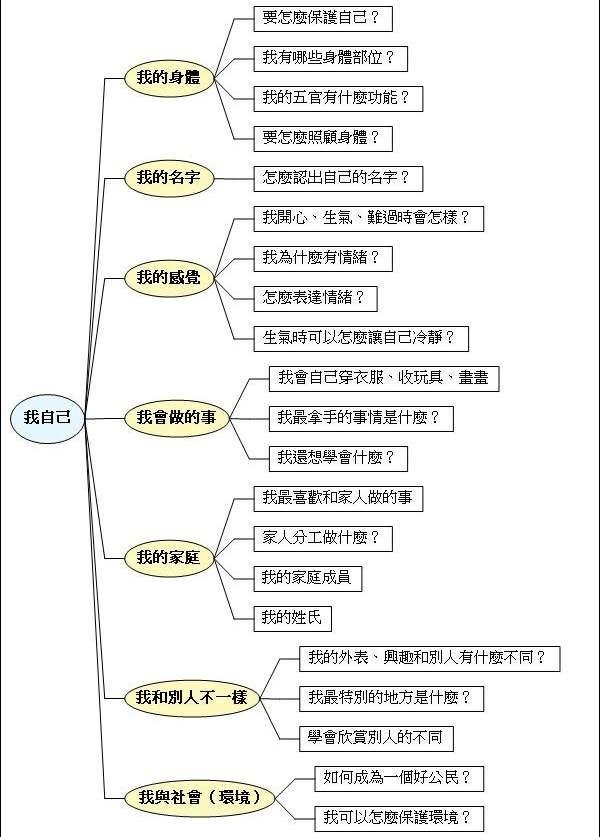
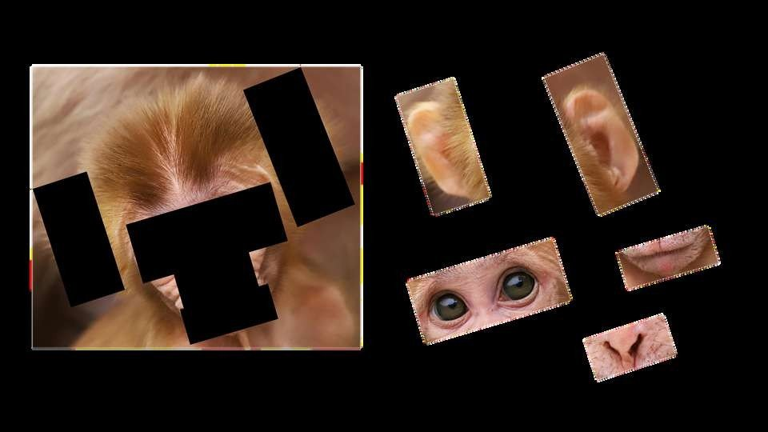
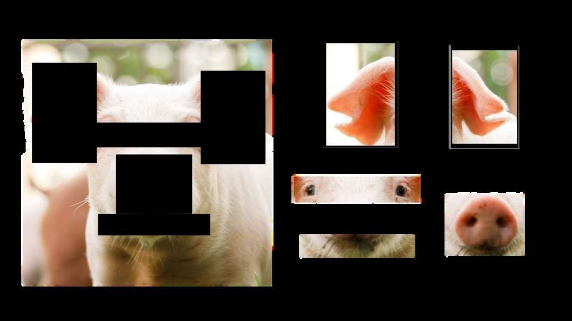
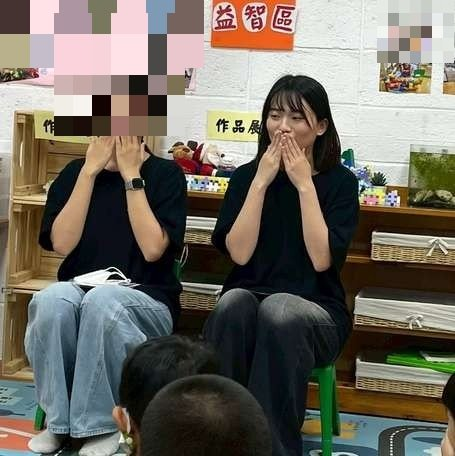
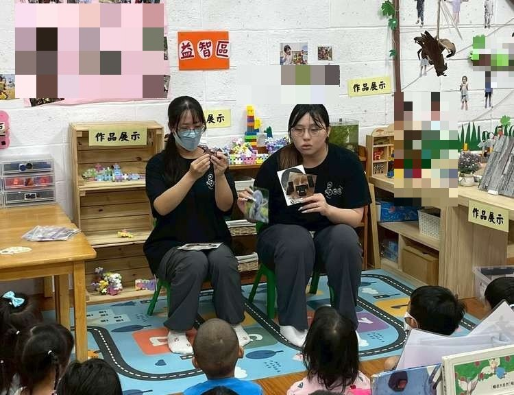
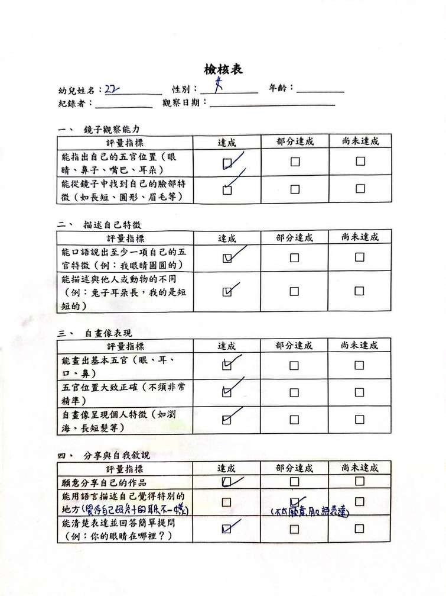
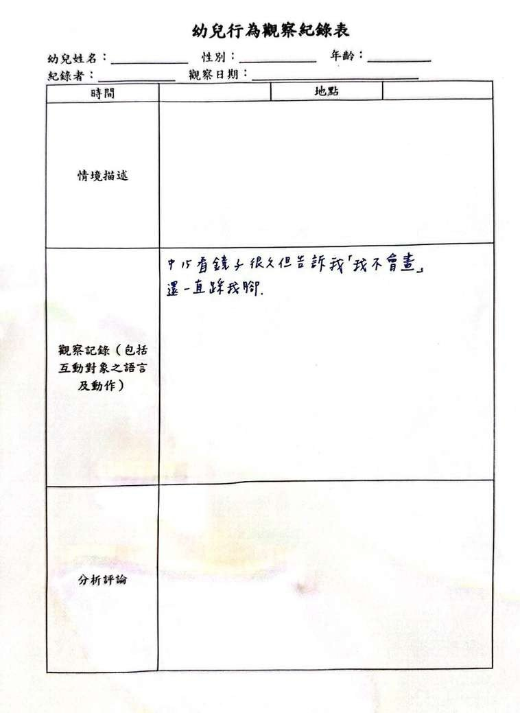
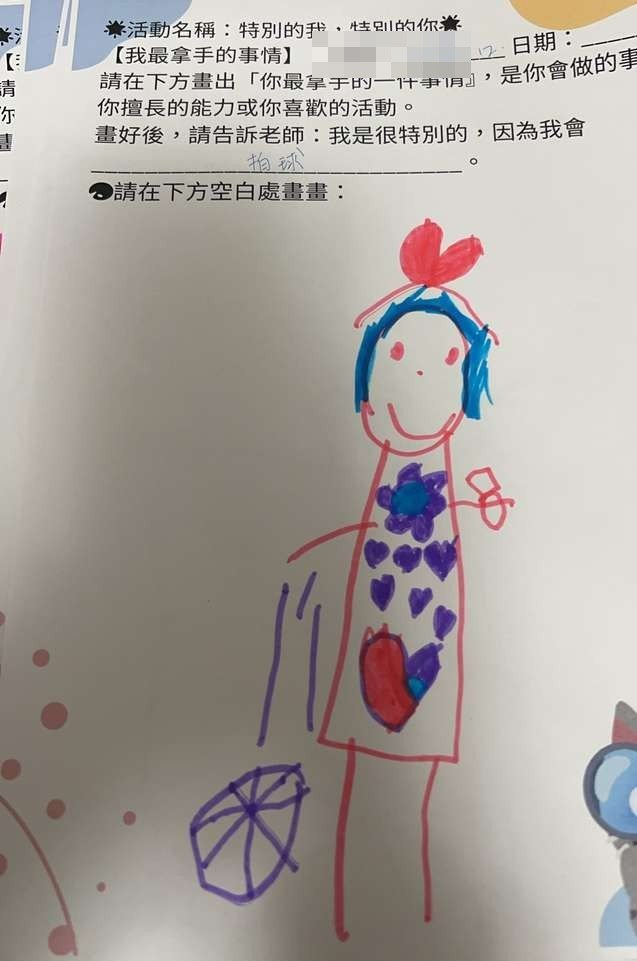
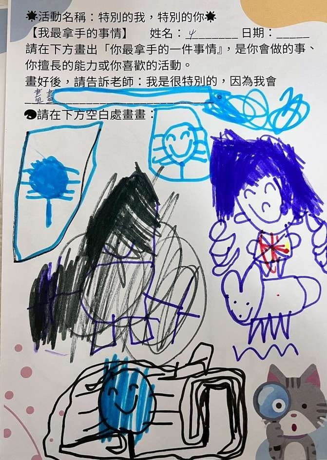

課程目標與學習指標
社-1-1 認識自己（社-中-1-1-1）；社-1-2 覺察自己與他人內在想法的不同（社-中-1-2-1）
活動怎麼進行
第一場｜認識自己
從「手摸五官」默契遊戲開始，以自製動物五官圖卡比較人與動物的差異，小組進行記憶翻翻卡配對；最後每組發鏡子，幼兒觀察自己的五官後在臉型模板上畫下「我的臉」，並上台分享自己覺得最特別的地方。
第二場｜我很特別
分享繪本《有些事，我特別厲害》，接著「找找不一樣」（同一指令、每人做出不同動作）與「我很特別」傳球分享遊戲，最後畫學習單：畫出自己最拿手的一件事，並向老師口述。
評量怎麼設計
- 評定量表：分四個向度——鏡子觀察能力／描述自己特徵／自畫像表現／分享與自我敘說，每項勾選「達成／部分達成／尚未達成」。
- 行為觀察紀錄表：記錄個別幼兒的特殊行為表現（含幼兒原話）。
- 作品：自畫像與學習單拍照存檔，搭配幼兒口述一起分析。
評量看見了什麼
- 「能辨識自己的外型特徵」多數幼兒可達成；「能表達特徵的特別之處」則需要引導提問才能達成——量表清楚區分出這兩層能力。
- 作品分析顯示：多數幼兒能畫出並說明自己的特點，透過圖畫與口語表達「我很特別」；少數需教師引導或同儕示範完成。
- 幼兒沒有想法時會出現模仿行為——模仿效應同時是學習鷹架也是秩序挑戰。
教學現場的即時調整
- 發現幼兒想不到「自己最特別的事」時，換不同問法（最擅長、最厲害的事）重新提問。
- 分組人數不均時即時調整教具分配；以小遊戲默契維持注意力。
這組的反思
- 教室配置要先掌握，依活動需求預先規劃分組。
- 遊戲玩法先在團討區示範一次、分組後各組再示範一次，幼兒更清楚。
- 各組進度不一時，可隨機加深難度或轉換玩法讓先完成的組挑戰。
給現場老師的啟示
自我概念這種「看不見的能力」，單一工具量不到——這組用量表看達成度、用觀察紀錄抓個別差異、用作品加口述留下證據，三種資料互相印證，是多元評量的標準示範。
現場紀實









